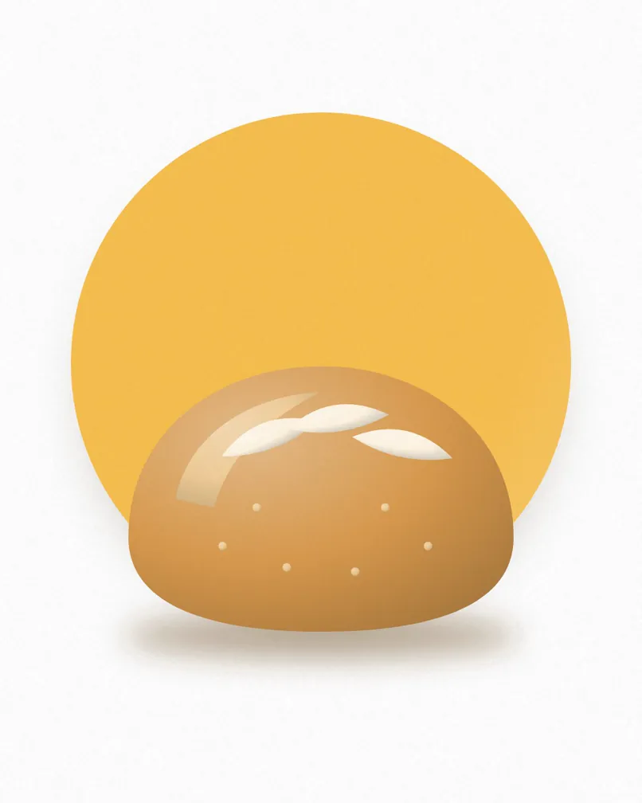
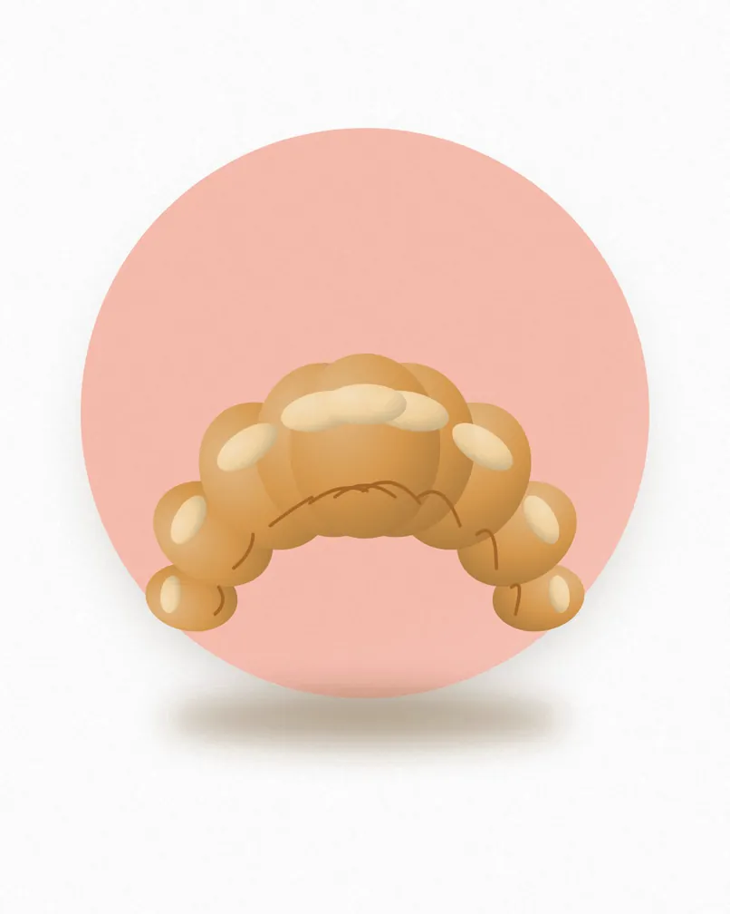
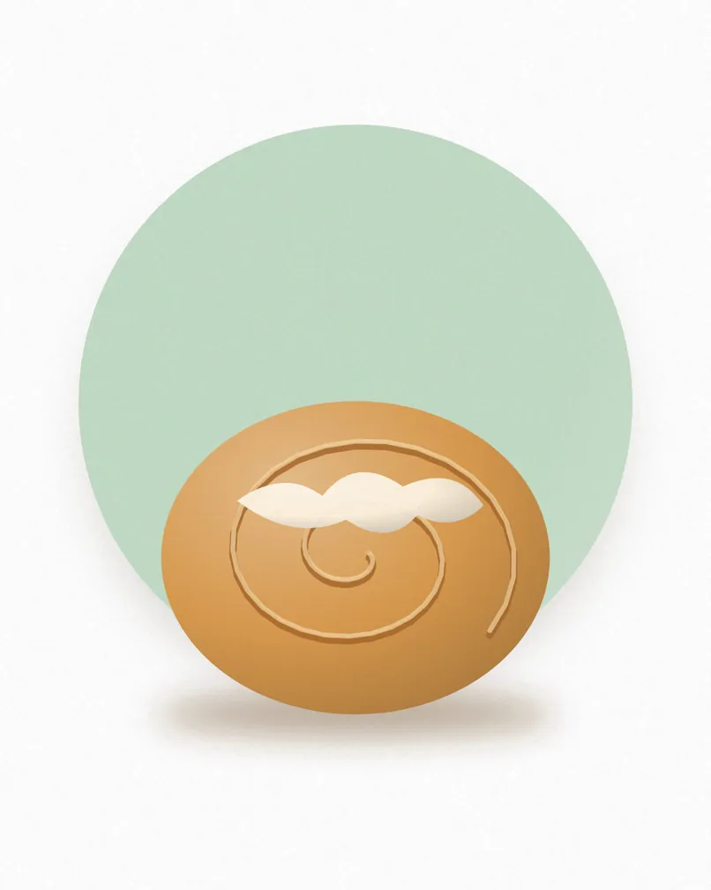

Country sourdough
£5.20Our 36-hour loaf with a blistered crust and a soft, open crumb.
Prices include VAT. V vegetarian, VG vegan, GF gluten free. Ask us about allergens.
Long-fermented and baked on the stone.

Our 36-hour loaf with a blistered crust and a soft, open crumb.
Dense, malty and covered in toasted seeds. Brilliant with cheese.
Crackling outside, airy inside. Baked every hour until noon.
Olive oil, sea salt and plenty of rosemary.
Laminated by hand, with real butter.

Twenty-seven layers, shatteringly crisp.
Two bars of dark chocolate inside.
Twice-baked with frangipane and toasted flakes.

Soft, sticky and finished with cream cheese icing.
Cakes and tarts, made in small batches.
Sweet pastry, sharp lemon curd, a little burnt sugar.
Spiced sponge, walnut and a thick cream cheese frosting.
Fudgy in the middle, crisp at the edge.
Whatever is best this week, under a golden lattice.
Good coffee to go with it.
Double shot, silky milk.
A rotating single origin, with free refills.
Real dark chocolate, not powder.
A big pot with leaves from the windowsill.
Pick a day and a time. We bake it, you collect it.
| Monday to Friday | {{hours_weekdays}} |
|---|---|
| Saturday | {{hours_saturday}} |
| Sunday | {{hours_sunday}} |